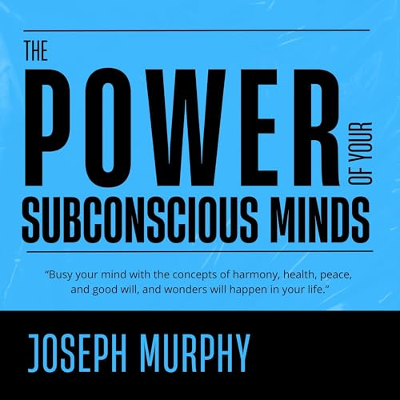

Library › Self-Improvement
The Power of Your Subconscious Mind — Summary & Key Lessons

The classic on programming your deeper mind — whatever you impress on the subconscious, it expresses in your life.
📖 OPEN THE FULL INTERACTIVE BREAKDOWN →🌐 Read it in Hindi, Hinglish, Gujarati, Tamil & 22 more languages — free, with audio.
💡 The Big Idea
You have two minds: the conscious (the captain giving orders) and the subconscious (the crew that executes without question). The subconscious never argues — it accepts whatever you repeatedly impress upon it through thought, feeling, and belief, then works 24/7 to make it real: in your body, habits, relationships, and circumstances. Murphy's method: feed it clear pictures and felt convictions of what you want — especially just before sleep — and stop planting the fears you don't.
🧠 The 7 Key Lessons
Lesson 1: The Captain and the Crew
Chapters 1–2: The Treasure House Within / How Your Own Mind Works
The conscious mind reasons, chooses, and judges; the subconscious accepts and executes without judging. Like soil, it grows nettles as readily as roses — it doesn't evaluate the seed. This is why casual self-talk matters enormously: 'I can't afford it,' 'I always get sick in winter,' 'nothing works for me' are orders, and the crew obeys. The subconscious also runs your heartbeat, healing, and intuition — it's powerful beyond the conscious mind's comprehension, but utterly obedient to suggestion.
📖 Example: Murphy's ship metaphor: the captain (conscious) gives bearings; the engine-room crew (subconscious) follows them exactly — even onto the rocks, if those are the orders. A man who repeats 'I'll never be able to pay my bills' is a captain ordering his own… Read the full example →
⚡ Do this: For 48 hours, write down every negative self-instruction you catch yourself saying. You're auditing the orders you've been giving the crew.
Lesson 2: The Law of Belief — Not the Thing Believed
Chapters 3–5: The Miracle-Working Power
It is not the object of belief but belief itself that produces results — this is why placebos heal, why 'cursed' people sicken, and why every religion's prayers 'work' for its faithful. The subconscious responds to what you FEEL to be true, not what is objectively true. Stop using willpower and force ('I MUST get rich' with a feeling of lack impresses... lack). Instead impress the end result with quiet conviction: feel the wish fulfilled.
📖 Example: Murphy tells of patients healed by relics later shown to be fakes — the healing was real, the relic irrelevant; belief did the work. Conversely, a woman told (falsely) she had a heart condition developed real symptoms. The subconscious built what was… Read the full example →
⚡ Do this: Take one goal. Stop affirming the struggle ('I'm trying to...'). Three times daily, feel it already done for 2–3 minutes — gratitude included. Feeling is the language the deeper mind understands.
Lesson 3: The Sleep Technique: Program the Night Shift
Chapters 6, 9: Practical Techniques / Sleep on It
The drowsy state before sleep is the golden window: the conscious gatekeeper relaxes and suggestions sink straight into the subconscious, which then works on them all night. Murphy's techniques: the visualization method (mental movie of the fulfilled desire), the 'thank-you' method (repeat gratitude for the outcome as if received), and the lullaby method (repeat one word — 'wealth,' 'health' — quietly as you drift off). Never fall asleep rehearsing grievances or fears: that's programming too.
📖 Example: A famous case Murphy cites: a woman repeated the single word 'Sale' drowsily each night regarding a property that hadn't moved for months — and shortly after, it sold. Whether cause or coincidence, the deeper principle holds in modern sleep science:… Read the full example →
⚡ Do this: Tonight: as you drift off, replay one desired outcome as a finished scene, or repeat one word capturing it. Do it nightly for 30 days — and ban pre-sleep doom-scrolling.
Lesson 4: Your Right to Be Rich
Chapters 10–12: The Right to Be Rich / Your Subconscious as Partner in Success
Poverty is not a virtue; wanting abundance is wanting a fuller life. Money flows to those whose subconscious holds no conflict about it — many people affirm wealth consciously while subconsciously condemning money ('filthy rich,' 'money is the root of evil'), so their two minds cancel out. Also never envy others' wealth: envy tells your subconscious that money is elsewhere, not with you. Clear the conflict, feel prosperous now, and act on the ideas that follow.
📖 Example: Murphy describes a man repeating 'wealth, wealth' while feeling like a fraud — results: none, because feeling contradicted words. The fix that worked: switching to a statement he could believe without inner protest — 'By day and by night I am being prospered… Read the full example →
⚡ Do this: Find your money conflict: write your 5 inherited beliefs about rich people. Then craft ONE prosperity affirmation you can say without inner argument — and use only that.
Lesson 5: Harmonious Relationships & Forgiveness
Chapters 16–17: Subconscious Mind and Marital Problems / Happiness
Other people tend to confirm the picture you hold of them — hold someone as hostile and your manner produces the very hostility you expected. Mental peace requires forgiveness, which Murphy defines practically: wishing the other person well until the memory carries no sting. The acid test: does recalling them still burn? Resentment, he insists, harms the resenter's own body and blocks the subconscious with static. You forgive for your own mental machinery, not for them.
📖 Example: Murphy's test of true forgiveness: imagine hearing wonderful news about the person who wronged you. Most people nod at this principle and change nothing. The gap between agreeing and acting is where the whole game is won or lost. Read the full example →
⚡ Do this: Pick your heaviest resentment. Daily for 2 weeks: 30 seconds sincerely wishing that person health and success. Measure progress by the shrinking sting, not by their behavior.
Lesson 6: Fear Is a Misused Imagination
Chapters 18–19: How to Use Your Subconscious to Remove Fear
Fear is faith in the wrong thing: vividly imagining what you DON'T want, with feeling — the exact technique that manifests goals, aimed backwards. Most fears (stage fright, water, elevators, failure) were learned and can be unlearned by doing the feared thing mentally, calmly, until the subconscious rewrites the association — then doing it physically. Normal caution protects you; abnormal fear paralyzes. The antidote is always a deliberately imagined opposite.
📖 Example: Murphy tells of a man terrified of swimming who, three times daily, imagined himself swimming calmly and joyfully — building a synthetic bank of positive water 'memories' — until the real pool matched the rehearsed one. Modern exposure therapy operates on… Read the full example →
⚡ Do this: Name your one paralyzing fear. Rehearse its successful opposite in vivid detail twice daily for 21 days, then take the smallest real-world step while the rehearsal is fresh.
Lesson 7: Staying Young in Spirit
Chapter 20: How to Stay Young in Spirit Forever
The subconscious never ages — but it obeys beliefs about aging. People who retire from all purpose decline fast not from years but from surrendered relevance: the mind told 'my useful life is over' complies. Murphy's prescription: never stop learning, keep contributing, count the harvest of wisdom age brings rather than the losses, and hold a picture of vitality. Age is the ripening of the mind, not the rotting of the body — treat later chapters as promotion, not expiry.
📖 Example: Murphy points to his father learning French at 65 and becoming a specialist at 70, and to the long line of late bloomers — from architects to statesmen — whose best work came after 60, because their self-image never accepted 'finished.' Read the full example →
⚡ Do this: Whatever your age: enroll in learning something genuinely new this month, and delete 'I'm too old for...' from your vocabulary — it's an order, and the crew is listening.
✅ 5-Step Action Plan
- Audit 48 hours of self-talk — list every order you're giving the crew.
- Craft ONE believable affirmation (no inner protest) and use it consistently.
- Run the sleep technique nightly for 30 days: one scene or one word.
- Apply the forgiveness drill to your single heaviest resentment.
- Replace one fear with 21 days of vividly rehearsed success, then act.
⚠️ When This Doesn't Work
Murphy's 'program your subconscious and it will deliver' is the single most dangerous sentence in self-help — it is the exact programming manual every pyramid and ponzi uses on its victims. OneCoin's victims didn't lose because they were greedy; they lost because they were taught to stop doubting and just believe — the Ruja Ignatova method was Murphy's book with a coin logo. Belief is fuel, not navigation. Program your mind for discipline, then program your spreadsheets for reality.
💀 The Graveyard Proves It
👛 OneCoin — The $4B Crypto With No Blockchain At All. Burn: $4B+ from 3M+ victims worldwide. Read the full case study →
💬 Best Quotes from The Power of Your Subconscious Mind
- “Whatever your conscious mind assumes and believes to be true, your subconscious mind will accept and bring to pass.”
- “The law of your mind is the law of belief.”
- “Busy your mind with the concepts of harmony, health, peace, and goodwill, and wonders will happen in your life.”
Interactive version: mark lessons as read, listen in your language, share quote cards.